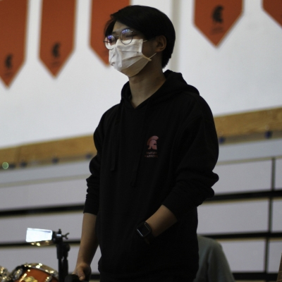

Photography
Check Out My Portfolio.
Portfolio
The way to get started is to quit talking and begin doing.
Walt Disney


Software Engineer Data Scientist Entrepreneur Photographer Musician
More About Me
I'm a rising Freshman at Northeastern University!
I'm enrolled as a Computer Science and Mathematics combined major student at the Khoury College of Computer Sciences and College of Science.
I'm eager to embark on an exciting academic journey. 💻 but am definitely not scared of what's coming. 🚀
I'm very passionate about exploring new things while connecting my interests and passions, from computer hardware and software to blending technology and entrepreneurship.🌟👨💼
I am currently a IB Year 2 senior at the American School of Warsaw in Warsaw Poland, and soon to be a Freshman at Northeastern University Khoury College of Computer Sciences for Computer Science and Mathematics
I have been coding ever since 2015 as an enthusiast, in 2020 I decided to completely dive into Computer Science.
I am opened for any type of internship, part-time or full-time work in areas of Software Engineering, AI/ML Engineering, as well as Data Science.
Sep 2021 - Present
Key Responsibilities:
Qualifications:
What is Dawka Daily? DAWKA is a student-led effort to produce a comprehensible, navigable portrait of a vibrant community. Most importantly, it is a medium within which young people with rare ideas and unique experience may share their ideals, works, and interests.
Jun 2022 - Jul 2022 · 2 mos
A 2-week intensive program in Artificial Intelligence and Machine Learning.
Qualifications:
Tools:
Nov 2021 - Dec 2021
Key Responsibilities & Qualifications:
Data Analyst:
Project Manager:
Internship Details: Illinois Institute of Technology - Illinois Tech Virtual Internships in partnership with GlobalShala
August 2021 - May 2023
Activities and societies: Student Council | Student Leadership Council: Executive Co-Publicist | Media Club: Livestream Specialist; Photographer | 10+ times Coffee House Solo Singer/Performer | Jazz/Rock/Pop Razz Band Lead Singer | Varsity Football | Tennis | Gazette | Coding Club
August 2018 - June 2021
Activities and societies: Student Council | Student Leadership Council: 10th Grade Publicist | MUN: ASMMUN 2020, IV ZYGMUN 2021 | Speech & Debate | 3 times Coffee House Singer/Performer
The way to get started is to quit talking and begin doing.
Walt Disney
Do the difficult things while they are easy and do the great things while they are small. A journey of a thousand miles must begin with a single step.
Laozi
If you want to send in any requests or interested in the areas that I am in, email me.
kailinx@kailinx.com
Phone: +48 692, 128, 161